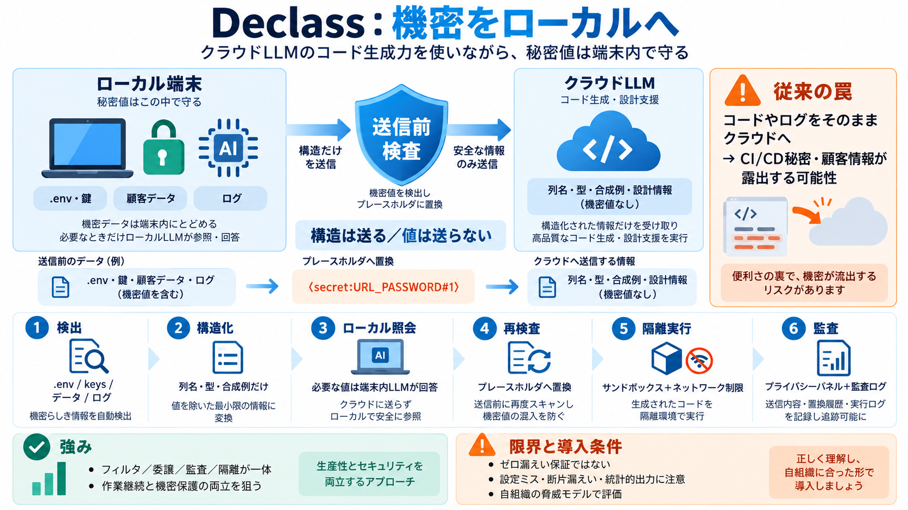

Code Review Agent Benchmark
| Qodo Benchmark (Yanay and Fingerman, 2026) | 2026 | Mined OSS PR reviews | Yes | LLM-as-a-judge | | CR-Bench (Pereira …

| Qodo Benchmark (Yanay and Fingerman, 2026) | 2026 | Mined OSS PR reviews | Yes | LLM-as-a-judge | | CR-Bench (Pereira …
tracked since the disclosure of Clinejection in early 2026, in which prompt injection delivered through a single malicio…
| Topic | | Replies | Views | Activity | --- --- | SKILLS.md for Rust development | 15 | 5549 | May 18, 2026 | | Cod…
Soliciting Material Pursuant to § 240.14a-12 EAGLE MATERIALS INC. (Name of Registrant as Specified In Its Charter…
| google-gemini/gemini-cli Star | 2025 | Google's open-source terminal coding agent with ReAct loop and MCP support. Sup…